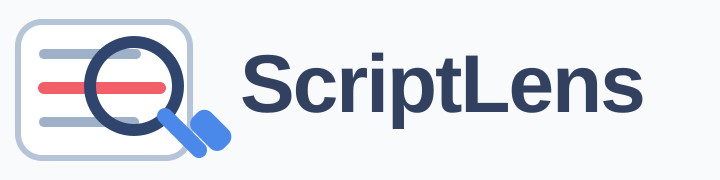

Open the workspace, inspect the cleanest source, and keep deeper analysis in one place.
Current Page
ScriptLens checks the active tab before it recommends the next move.
Checking current page...
Gathering page and video context.
Recommended
Lead with the cleanest source available, then continue in the workspace.
Open the workspace
ScriptLens will keep detailed analysis in the side panel.
Latest Snapshot
The full report lives in the side panel. This is the handoff point.
Run an analysis from the workspace to keep a recent score here.